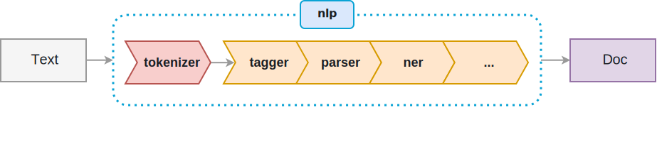

spaCy¶
Make sure you’ve installed spacy. If not, run the cell below after
uncommenting it. We will cover the capabilities we examined in
scikitlearn as well as some additional functionality with spaCy
including:
- Annotating Text
- Tokenizing Text
- POS tagging and dependencies
- Named entity extraction
- Similarity
In [2]:
#%%bash
#pip install spacy
In [1]:
import spacy
In [2]:
nlp = spacy.load('en')
In [3]:
doc = nlp('This is a sentence about a dog, a priest, and a bicycle in North Dakota named Microsoft.')
The spaCy pipeline¶

In [4]:
for word in doc:
print((word.text, word.pos_, word.dep_))
('This', 'DET', 'nsubj')
('is', 'VERB', 'ROOT')
('a', 'DET', 'det')
('sentence', 'NOUN', 'attr')
('about', 'ADP', 'prep')
('a', 'DET', 'det')
('dog', 'NOUN', 'pobj')
(',', 'PUNCT', 'punct')
('a', 'DET', 'det')
('priest', 'NOUN', 'appos')
(',', 'PUNCT', 'punct')
('and', 'CCONJ', 'cc')
('a', 'DET', 'det')
('bicycle', 'NOUN', 'conj')
('in', 'ADP', 'prep')
('North', 'PROPN', 'compound')
('Dakota', 'PROPN', 'pobj')
('named', 'VERB', 'acl')
('Microsoft', 'PROPN', 'oprd')
('.', 'PUNCT', 'punct')
In [5]:
for word in doc:
print(word.text)
This
is
a
sentence
about
a
dog
,
a
priest
,
and
a
bicycle
in
North
Dakota
named
Microsoft
.
In [8]:
for token in doc:
print(token.text, token.lemma_, token.pos_, token.tag_, token.dep_,
token.shape_, token.is_alpha, token.is_stop)
This this DET DT nsubj Xxxx True False
is be VERB VBZ ROOT xx True True
a a DET DT det x True True
sentence sentence NOUN NN attr xxxx True False
about about ADP IN prep xxxx True True
a a DET DT det x True True
dog dog NOUN NN pobj xxx True False
, , PUNCT , punct , False False
a a DET DT det x True True
priest priest NOUN NN appos xxxx True False
, , PUNCT , punct , False False
and and CCONJ CC cc xxx True True
a a DET DT det x True True
bicycle bicycle NOUN NN conj xxxx True False
in in ADP IN prep xx True True
North north PROPN NNP compound Xxxxx True False
Dakota dakota PROPN NNP pobj Xxxxx True False
named name VERB VBD acl xxxx True False
Microsoft microsoft PROPN NNP oprd Xxxxx True False
. . PUNCT . punct . False False
POS Tags and Dependency Parsing¶
spaCy POS Tags: https://spacy.io/api/annotation
spaCy Dedpendencies: https://spacy.io/usage/linguistic-features
In [6]:
from spacy import displacy
In [5]:
doc = nlp('This is a sentence')
opts = {'color': 'white', 'bg': 'lightblue', 'compact': True}
displacy.render(doc, style='dep', jupyter=True, options = opts)
Named Entity Recognition¶
spaCy entities: https://spacy.io/usage/linguistic-features#entity-types
In [11]:
doc = nlp('Apple is looking at buying U.K. startup for $1 billion. My dog does not eat Apples.')
for ent in doc.ents:
print(ent.text, ent.start_char, ent.end_char, ent.label_)
Apple 0 5 ORG
U.K. 27 31 GPE
$1 billion 44 54 MONEY
In [12]:
displacy.render(doc, style='ent', jupyter=True)
Apple
ORG
is looking at buying
U.K.
GPE
startup for
$1 billion
MONEY
. My dog does not eat Apples.
In [13]:
import pandas as pd
In [14]:
train = pd.read_csv('data/ny_donors.csv')
In [15]:
train.head()
Out[15]:
| Unnamed: 0 | id | teacher_id | teacher_prefix | school_state | project_submitted_datetime | project_grade_category | project_subject_categories | project_subject_subcategories | project_title | project_essay_1 | project_essay_2 | project_essay_3 | project_essay_4 | project_resource_summary | teacher_number_of_previously_posted_projects | project_is_approved | |
|---|---|---|---|---|---|---|---|---|---|---|---|---|---|---|---|---|---|
| 0 | 13 | p173555 | 9b7f355e34bc9ca5740779b69ee14d8e | Mrs. | NY | 2016-11-15 22:13:39 | Grades 3-5 | Literacy & Language | Literature & Writing | Extra! Extra! Read all about it!! We love to ... | Each day my fifth graders walk into our \"home... | My students have had a taste of good reading! ... | NaN | NaN | My students need good books, with life lessons... | 5 | 0 |
| 1 | 21 | p116615 | b3593a375f2cf7fd4469b928ffac1c95 | Mrs. | NY | 2016-09-30 08:12:37 | Grades PreK-2 | Applied Learning, Music & The Arts | Early Development, Performing Arts | Oral Language Development through the use of p... | Teaching kindergarten in a diverse district po... | Students don't often get the chance to 'play' ... | NaN | NaN | My students need the opportunity to develop or... | 0 | 1 |
| 2 | 30 | p081434 | 17563b7d138a9ca1e7308f0f480e7d09 | Ms. | NY | 2016-12-06 21:19:44 | Grades PreK-2 | Health & Sports, Special Needs | Health & Wellness, Special Needs | Seating Like a Boss- Our 21st Century Room | \"Great job buddy!\" is something I hear every... | In order to promote essential learning skills ... | NaN | NaN | My students need an opportunity to sit and wor... | 9 | 0 |
| 3 | 32 | p156550 | a902ce7ebdce6f236873d6b443c3ca08 | Ms. | NY | 2017-03-30 20:05:08 | Grades 9-12 | Applied Learning, Special Needs | Other, Special Needs | Keeping Students Focused with Fun and Technology! | Attending a District 75 high school in Bronx, ... | With a classroom lacking technology, student i... | NaN | NaN | My students need a wider variety of Interactiv... | 0 | 1 |
| 4 | 59 | p186381 | da67f09a612a32fa30c9c80bed7e6365 | Mrs. | NY | 2016-09-24 11:36:26 | Grades PreK-2 | Literacy & Language | Literacy, Literature & Writing | Listening & Learning in First Grade | Who doesn't enjoy listening to a great story? ... | The Listening Center in the classroom is alway... | NaN | NaN | My students need wireless headphones to use in... | 9 | 1 |
In [16]:
essay = train.project_essay_1[10]
In [17]:
essay
Out[17]:
"I have the amazing opportunity to collaborate with over 500 students in our STEM (Science, Technology, Engineering, Math) Inquiry-Based Learning Lab. We are located in a small, rural community in Western New York. (We can see cows from our classroom!) I work with every student in our K-6 population on STEM project based learning. \\r\\n\\r\\nWe would like to utilize engineering, robotics, and programming to develop solutions to real-world STEM problems. Please help us move our youth's focus from passive consumers of technology to innovative creators of programs and inventions. This will allow our students to begin thinking about career paths at an early-age and to develop confidence with a positive mindset concerning the STEM content areas."
In [18]:
doc = nlp(essay)
In [19]:
displacy.render(doc, style='ent', jupyter=True)
I have the amazing opportunity to collaborate with over
500
CARDINAL
students in our
STEM
ORG
(
Science, Technology, Engineering
ORG
, Math) Inquiry-Based Learning Lab. We are located in a small, rural community in
Western New York
LOC
. (We can see cows from our classroom!)
NORP
I work with every student in our
K-6
PERSON
population on
STEM
ORG
project based learning. \r\n\r\nWe would like to utilize engineering, robotics, and programming to develop solutions to real-world
STEM
ORG
problems. Please help us move our youth's focus from passive consumers of technology to innovative creators of programs and inventions. This will allow our students to begin thinking about career paths at an
early-age
DATE
and to develop confidence with a positive mindset concerning the
STEM
ORG
content areas.
In [20]:
doc.user_data['title'] = train.project_title[10]
displacy.render(doc, style='ent', jupyter=True)
And on this Farm, There Was Some Raspberry Robots?
I have the amazing opportunity to collaborate with over
500
CARDINAL
students in our
STEM
ORG
(
Science, Technology, Engineering
ORG
, Math) Inquiry-Based Learning Lab. We are located in a small, rural community in
Western New York
LOC
. (We can see cows from our classroom!)
NORP
I work with every student in our
K-6
PERSON
population on
STEM
ORG
project based learning. \r\n\r\nWe would like to utilize engineering, robotics, and programming to develop solutions to real-world
STEM
ORG
problems. Please help us move our youth's focus from passive consumers of technology to innovative creators of programs and inventions. This will allow our students to begin thinking about career paths at an
early-age
DATE
and to develop confidence with a positive mindset concerning the
STEM
ORG
content areas.
In [21]:
sents = essay.split('.')
In [24]:
sents[0]
Out[24]:
'I have the amazing opportunity to collaborate with over 500 students in our STEM (Science, Technology, Engineering, Math) Inquiry-Based Learning Lab'
In [27]:
sents[3]
Out[27]:
' \\r\\n\\r\\nWe would like to utilize engineering, robotics, and programming to develop solutions to real-world STEM problems'
In [34]:
sent = sents[3].replace('\\r\\n', '')
bobot = sents[3].replace('robotics', 'bobot')
In [35]:
bobot
Out[35]:
' \\r\\n\\r\\nWe would like to utilize engineering, bobot, and programming to develop solutions to real-world STEM problems'
In [36]:
sent
Out[36]:
' We would like to utilize engineering, robotics, and programming to develop solutions to real-world STEM problems'
In [24]:
doc = nlp(sent)
In [25]:
for word in doc:
print(word.text, word.pos_)
I PRON
have VERB
the DET
amazing ADJ
opportunity NOUN
to PART
collaborate VERB
with ADP
over ADP
500 NUM
students NOUN
in ADP
our ADJ
STEM NOUN
( PUNCT
Science NOUN
, PUNCT
Technology PROPN
, PUNCT
Engineering PROPN
, PUNCT
Math PROPN
) PUNCT
Inquiry PROPN
- PUNCT
Based VERB
Learning PROPN
Lab NOUN
In [26]:
for ent in doc.ents:
print(ent.text, ent.start_char, ent.end_char, ent.label_)
500 56 59 CARDINAL
STEM 76 80 ORG
Science, Technology, Engineering 82 114 ORG
In [15]:
from spacy.lang.en.stop_words import STOP_WORDS
In [37]:
sentence = []
for w in doc:
if w.text != 'n' and not w.is_stop and not w.is_punct and not w.like_num:
sentence.append(w.lemma_)
In [38]:
sentence
Out[38]:
['-PRON-',
'amazing',
'opportunity',
'collaborate',
'student',
'stem',
'science',
'technology',
'engineering',
'math',
'inquiry',
'base',
'learning',
'lab',
' ',
'-PRON-',
'locate',
'small',
'rural',
'community',
'western',
'new',
'york',
' ',
'-PRON-',
'cow',
'classroom',
' ',
'-PRON-',
'work',
'student',
'k-6',
'population',
'stem',
'project',
'base',
'learn',
' ',
'\\r\\n\\r\\nwe',
'like',
'utilize',
'engineering',
'robotic',
'programming',
'develop',
'solution',
'real',
'world',
'stem',
'problem',
' ',
'please',
'help',
'youth',
"'s",
'focus',
'passive',
'consumer',
'technology',
'innovative',
'creator',
'program',
'invention',
' ',
'this',
'allow',
'student',
'begin',
'think',
'career',
'path',
'early',
'age',
'develop',
'confidence',
'positive',
'mindset',
'concern',
'stem',
'content',
'area']
In [39]:
noun_chunks = list(doc.noun_chunks)
print(noun_chunks)
sentences = list(doc.sents)
[I, the amazing opportunity, over 500 students, our STEM (Science, Technology, Engineering, Math) Inquiry-Based Learning Lab, We, a small, rural community, Western New York, We, cows, our classroom, I, every student, our K-6 population, STEM project, \r\n\r\nWe, engineering, robotics, programming, solutions, real-world STEM problems, us, our youth's focus, passive consumers, technology, innovative creators, programs, inventions, our students, career paths, an early-age, confidence, a positive mindset, the STEM content areas]
Essay Exercise¶
- Can you locate a few essays that are talking about helping students improve their mathematics?
- Tell me something about the kinds of needs a few teachers in
different areas describe in the
project_resource_summarycolumn. Create visualization of dependency tree for two different teachers.
In [16]:
essays = train.project_essay_2
In [18]:
essays[essays.str.contains('math')]
Out[18]:
33 Our classroom has a Smartboard that has taken ...
35 My second grade students love math even though...
36 I am requesting supplies such as laminating sh...
37 PROJECT\r\n\r\nThe use of whiteboards is almos...
50 My students all learn in different ways, and m...
51 My first graders love working on the computer,...
54 Having LEGO WeDo sets in our classroom would b...
57 Chromebooks are fantastic for the quality and ...
62 Students will use the ipads during research wr...
63 General school supplies are expensive! Our cl...
65 Having these 2 computers will help enhance my ...
74 HAVING A PROPER CAMCORDER TO RECORD A VARIETY ...
76 My students are having such a great time recor...
97 Ever since my students have realized that dono...
106 I teach math and science to 52 amazing 6th-gra...
108 The chrome books that I have asked for will be...
119 The students in class 1-306 at P.S. 110 in Car...
122 Students would use the iPad when making projec...
128 My students are in dire need of hands on activ...
135 In our classroom, Ms Mesk helps us to create i...
138 The materials that we are hoping to be funded ...
144 Students will benefit from the use a laptop as...
147 I want to provide my students with the best ac...
166 While Pre-K is all about the play, digital lit...
178 The use of a whiteboard is almost a daily acti...
186 I am requesting basic materials for my classro...
189 In the fall, my coteacher and I will be embark...
208 Play-doh is an excellent resource for young le...
212 This year, we need some basic supplies for our...
213 At any age, students love breaking out the Leg...
...
11958 The donations for this project will help my st...
11970 This year I have implemented interactive noteb...
11977 My students are in need of STEM materials in o...
11978 In today's growing digital world, students not...
11981 If my students and I receive these resources, ...
11983 Chromebooks are fantastic for the quality and ...
11994 My students are not only visual and hands-on l...
11995 All students need to develop and apply problem...
11996 I am requesting a number of mathematical resou...
11999 Since many of my students are English Language...
12007 Manipulatives give the math students a concret...
12016 Having the I-pad minis in my classroom will al...
12017 My students crave technology! “Screen Time\" i...
12028 Students are not learning science if they do n...
12030 By providing students with these iPads, studen...
12035 The scholastic science and math magazines that...
12045 These Hokki Stools would have a positive impac...
12049 As a classroom teacher in a district with a hi...
12072 I am requesting glue sticks and markers for my...
12076 Introducing new math materials to my fourth gr...
12089 With the transition to Common Core mathematics...
12094 Our first grade students are beginning to work...
12104 My students are in need of access to more tech...
12111 A laminating machine and necessary supplies wi...
12114 My students will benefit from these jot memo p...
12123 Out students need opportunities to engage in s...
12124 Many of my students are hands-on learners who ...
12136 I am requesting colored folders for students t...
12140 Children with disabilities have difficulty acc...
12152 Having a laptop to connect to our SMARTboard w...
Name: project_essay_2, Length: 1901, dtype: object
In [20]:
essays[106]
Out[20]:
'I teach math and science to 52 amazing 6th-grade students. Most of the time we are working with partners or in groups. When it is time to work alone sometimes it is difficult for my students to stay focused on the assignment in front of them. These privacy boards are easy to move so that when they need to collaborate they can remove them, but when they need to focus on their own work, like for a test or quiz, we can use them to help. \\r\\nI am also requesting pencils, eraser tops, and a pencil sharpener so my students always have the supplies they need so they are always ready to work!'
In [21]:
doc = nlp(essays[106])
In [31]:
sents = []
for sent in doc.sents:
sents.append(sent)
type(sents[4])
Out[31]:
spacy.tokens.span.Span
In [33]:
doc = nlp(str(sents[3]))
opts = {'color': 'white', 'bg': 'lightblue', 'compact': True}
displacy.render(doc, style = 'dep', jupyter = True, options = opts)
In [35]:
doc = nlp(str(sents))
opts = {'color': 'white', 'bg': 'lightblue', 'compact': True}
displacy.render(doc, style = 'ent', jupyter = True, options = opts)
[I teach math and science to
52
CARDINAL
amazing
6th
ORDINAL
-grade students. , Most of the time we are working with partners or in groups. , When it is time to work alone sometimes it is difficult for my students to stay focused on the assignment in front of them. , These privacy boards are easy to move so that when they need to collaborate they can remove them, but when they need to focus on their own work, like for a test or quiz, we can use them to help. ,
\r\nI
DATE
am also requesting pencils, eraser tops, and a pencil sharpener so my students always have the supplies they need so they are always ready to work!]